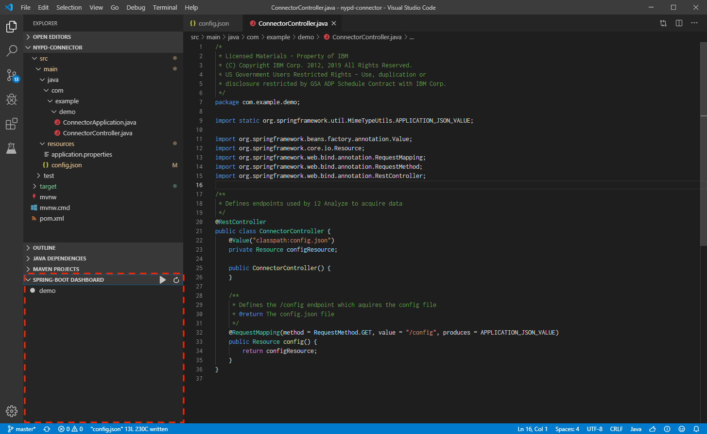

Running a Java connector via the command-line
The example Java connector is a simple Spring Boot application. Here's how to run it via the command-line. (You also have the option to run it directly in VSCode.)
In the project directory (where the mvnw file is), use the commands below to get your connector up-and-running. There are two ways to go about this. We recommend using the run command, for the reasons detailed below.
Run
Use the following command to start the connector and run it until you press
Ctrl-C. With the Spring Boot Devtools plugin, which we are using in this
project, code and resource changes are detected automatically while using this
command, and the application is automatically restarted. This is incredibly
useful when making changes, since you can see the results almost
instantaneously.
mvnw spring-boot:run
Start and stop
To start the connector application and return to the command prompt, use:
mvnw spring-boot:start
You will then need to stop the connector application manually using
mvnw spring-boot:stop
Running the connector in VS Code
To run your connector directly from VS Code, ensure you have installed the Spring Boot Extension Pack for VSCode, either via the Extensions menu in VSCode, or using this link Then, with your project directory open in VS Code:
- There should be a Spring Boot Dashboard panel at the bottom, where the "demo" app should appear.
- Right-click on the 'demo' app and click Run. The resulting output in the debug console should print the URL for the connector
The app automatically restarts whenever files are updated, which helps speed up the development/test cycle.
The screenshot below shows the Spring Boot Dashboard panel with the "demo" app appearing where you should expect to see it.
